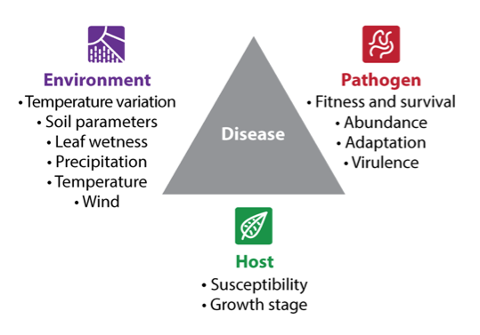
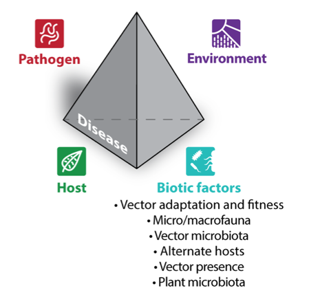
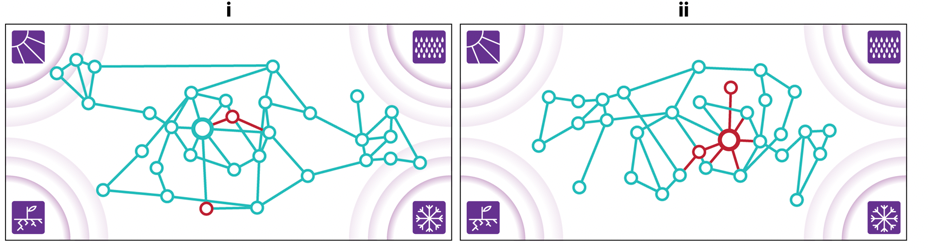
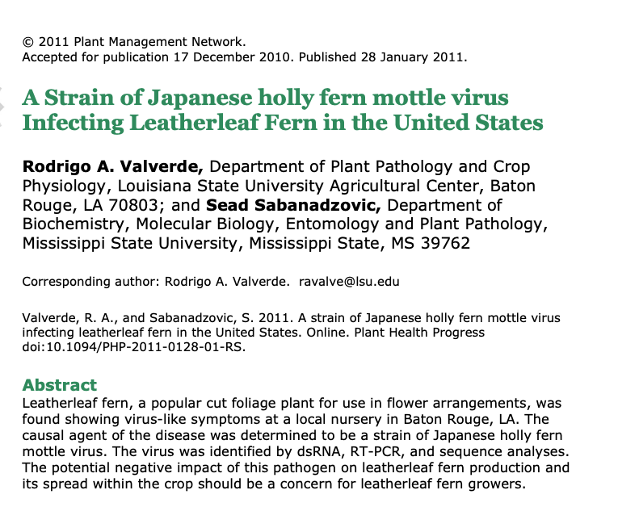

Introduction (Paul)
We have watched for ten years as sword ferns died in Seward Park's 120 acre old-growth forest. We call this the "sword fern blight". We have mapped and measured, done systematic observations, run some experiments, and curated reports from elsewhere in the Puget Lowlands. Preliminary study suggests that the blight is not the direct result of changing weather patterns. It may involve a waterborne pathogen.
Sustained formal study is now needed. We propose here a sequence of experiments to identify the cause (or causes) of the sword fern blight - to figure out how and why these famously robust and long-lived plants are dying at Seward Park and across the Puget Lowlands of Washington state.
- A full history of our work on this problem is available at a blog begun in 2015.
- An 18-minute documentary on the ferns can be seen here.
- Good news: the die-off at Seward Park has slowed considerably, now moving at about 20 feet per year through a dense sword fern site. In 2016 we saw spread rates of 100 feet per year.
- Not so good news: this apparent drop-off in virulence predicts that the disease causes will be harder to identify.
- There are at present two active die-off sites which invite close study. See section "Active Die-Off Sites" below.
Current State of Knowledge (Dylan)
Over the past decade, an enormous amount of knowledge has accrued regarding the sword fern blight. We are now confident that a pathogen is responsible for the phenomenon. We have also developed better documentation of the extent of the blight in Western Washington, the array of symptoms associated with the blight, and patterns that occur in areas where there is observable mortality. Below is a summary of some of the most pertinent findings.
Mortality Patterns
- The symptoms and mortality associated with the blight can spread through sword fern populations over multiple years (personal observation), which suggests that the causal agent is both transmissible and that it is not driven by discrete climate anomalies in any given year.
- The spread of the blight within a population can be impeded or slowed by pedestrian trails (personal observation), potentially through the interruption of the spatial continuity of the host plants, and/or through compaction of the soil.
- Large mortality events do not appear to be associated with especially dry years.
- Mortality is density-dependent – a greater percentage of the sword fern population dies when sword fern cover-abundance is higher (personal observation, analysis of SUNP/EC data). Additionally, there appears to be a cover-abundance threshold around 10% to 12%, below which mortality is low or absent. These findings suggest that the pathogen has limited dispersal ability and that the host plants must be in close proximity for transmission to occur.
- In areas where large mortality events have occurred, the likelihood of survival is correlated with proximity to large trees and coarse woody debris (Shannon, 2019).
- Co-occurring plant species appear to be unaffected by the blight (personal observation), which suggests that the pathogen is host-specific to sword fern.
- Dryopteris species appear to be unaffected by the blight(personal observation). This genus shares the same family as sword ferns (Dryopteridaceae). Dryopteris expansa and Dryopteris filix-mas have both been observed in Seward Park.
- Following a large mortality event, the pathogen appears to be unable to induce symptoms in new ferns introduced to the site (Shannon, 2022), which suggests that it may be absent from areas where it was previously transmissible, and suggests that the pathogen is dependent on a living host to persist in the environment.
Morpho-Physiological Symptoms
- Foliar symptoms resemble drought stress and range in severity (personal observation):
- Crispate pinnae
- Twisted rachises
- Tip die-back
- Discoloration
- Frond production in symptomatic ferns can slowly decrease over multiple years, resulting in asymmetrical quantities of fronds across all cohorts on any given plant (Mendenhall and Barrera, 2021). Additionally, fiddleheads/leaf buds appear to be underdeveloped in symptomatic ferns, or they whither after initially forming.
- Symptoms can be experimentally induced (Mendenhall et al., 2019; Shannon, 2022, 2020).
- Results from the greenhouse transmission experiment suggest that the causal agent is likely present in the foliage and can be transmitted through water as a medium.
- Results from the field experiments suggest that the causal agent is unevenly distributed in Seward Park, with greater pathogen pressure in areas where the symptoms and mortality are actively developing in the endemic sword fern population. Additionally, irrigation during the summer does not appear to prevent the development of symptoms. These findings suggest that if seasonal drought stress interacts with the pathogen, it likely acts as a compounding stressor, but by itself does not drive the phenomenon.
- During the summer, symptomatic ferns have lower foliar moisture content than apparently healthy ferns even when soil moisture content is similar (Mendenhall and Barrera, 2021).
Microbiome
There are significant differences in the composition of the fungal endophyte communities in the rhizomes of symptomatic ferns compared with healthy ferns, but no fungal taxa were significantly associated with the symptomatic ferns.Paul Shannon offers a cautionary note on our 2021 results. Our then collaborators, Ylva Lekberg and Mary Ellyn DuPre reported:
- Mary Ellyn: "Cronartiaceae (C. ribicola) sequences in my analysis were not significantly different among rhizome samples, but only because I removed one (highly amplified) outlier in the healthy samples which altered the distribution of the data, plus, all other samples were within the same sequence range. Did you remove this out of your analysis too? Overall, the biggest take-home of this analysis is the observation that there were (marginal and significant) shifts in fungal communities within healthy/symptomatic rhizomes and between rhizomes and leaves." (email 5/17/2021)
- Ylva: "most of [the rhizome] tissue is dead so either roots or leaves moving forward would make more sense" (email 5/25/2021).
- Dylan: "My analysis of the leaves was pretty limited because it's only 3 samples, all from symptomatic ferns." (Dylan Mendenhall, email 4/5/2021)
Knowledge Gaps (Dylan)
- What is the taxonomic identity of the pathogen?
- Are other Polystichum species vulnerable to the blight or potential hosts to the pathogen?
- How does the pathogen spread?
- Is there a cover-abundance or density threshold in sword fern populations that inhibits the spread of the pathogen?
- What is the mechanism that allows CWD and large trees to facilitate survival in areas where there is high mortality?
- How does the pathogen interfere with water transport in the leaves?
- Are the ferns that survive large mortality events resistant to the pathogen?
The Disease Triangle and its Extensions: Tetrahedron, Pathobiome (Paul)
The following discussion draws upon a 2017 article in Annnual Review of Phytopathology, in which the traditional disease triangle, and its extensions are described. Ecology and Genomic Insights into Plant-Pathogenic and Plant-Nonpathogenic Endophytes

With the inclusion of interacting biotic factors, reflecting our increasing understanding of the multiplicity of factors which combine in health and disease, the triangle becomes a tetrahedron:
The paper provides this background:
Plants are colonized by complex microbial communities that play different roles regarding plant growth and health. Whereas some microbial members are detrimental and cause diseases, others promote plant growth and enhance nutrient acquisition and tolerance to biotic and abiotic stresses via a multitude of mechanisms.The authors conclude that "disease is driven by a highly complex disease network in which different abiotic and biotic factors interact and influence each other. For instance, exposure of the plant-microbe system to a specific temperature or soil environment results in a specific plant condition, which, together with temperature/soil environment, shapes the associated microbiota and its interactions. Therefore, disease occurs only at specific points of this network or at specific combinations of all factors."A large fraction of the microbial community can be defined as commensal microorganisms that find their niche in the association with plants but have no known function to their hosts. Depending on different plant environments, microbiota associated with plants can be found on the exterior of plants, such as the rhizozphere or the phyllosphere, or in the interior of plants, such as the endosphere. Plants may be colonized by pathogens and nonpathogenic endophytes, which spend at least part of their life cycle inside plants.
[T]here are both pathogenic and nonpathogenic endophytes. First, most isolated endophytes are tested on a single or a few plant species, and even if they show no deleterious effects on these plants, they may exhibit pathogenicity on other plant hosts. Furthermore, pathogenicity depends on a number of environmental parameters and biotic interactions. For instance, fluorescent pseudomonads, frequently showing plant-beneficial effects, can cause disease on leatherleaf ferns under specific conditions [we describe this phenomenon in the next section]. In addition, with the advent of molecular tools to investigate microbiomes without the need of cultivation leading to a number of uncharacterized taxa in an environment, functions such as pathogenicity or mutualism can rarely be predicted. The advent of molecular tools enables the investigation of microbiomes without the need of cultivation, which leads to the identification of a number of uncharacterized endophytic microorganisms. Their functions, such as pathogenicity or mutualism, can rarely be predicted.
And offer this figure:

Network of microbiome interactions that either (i) suppress or (ii) favor pathogen establishment and performance. Environmental factors, such as (clockwise from top left) radiation, precipitation, temperature, and soil parameters may affect the microbiome directly or indirectly via the plant host.
As we follow the research roadmap proposed here, we may be fortunate, and quickly identify a single novel (or lost) fungal endophyte responsible for the sword fern blight.
But we may not be so lucky. The blight may be due to a complex and shifting combination of factors, abiotic and biotic, perhaps including interacting insect vectors, bacterial pathogenicity islands, quorum sensing, oomyctes and fungi.
Disease Case Study 1: Leatherleaf Fern Distortion Syndrome (Paul)
The following remarks are drawn from two papers:
- 2010: Fern Distortion Syndrome of Leatherleaf Fern in Costa Rica: Symptoms, Incidence, and Severity
- 2013: Symptoms of Fern Distortion Syndrome Resulting from Inoculation with Opportunistic Endophytic Fluorescent Pseudomonas spp
A summary of the 2010 paper
- Early studies examined soil physical and chemical properties, plant nutrition, insect and nematode populations, searched for fungal, bacterial, viral and oomycetes infection. No cause was found, no articles published; only tetrycycline spraying may have been mildly effective in reducing symptoms.
- Growers reported that the syndrome appears to be transmitted via rhizomatic propagation, when rhizomes and soils are moved to a new growing site.
- None of the studies carried out between 1998 and 2004 identified any single specific pathogen.
- For reasons unmention in the 2010 paper, it was decided to test rhizomatic population of endophytic fluorescent pseudomonas, an endemic Gram-negative rod-shaped bacterium.
- 2005 sampling protocol tested the hypothesis that distorted fronds are associated with reduced growth (small size) in rhizomes and roots. Rhizomes were collected from symptomatic and asymptomatic ferns, characterized for vascular discoloration, cultured for pseudomonas.
- Both scanning and transmission electron microscopy (SEM, TEM) was applied to samples from pinnae, rachises, rhizomes and roots, apparently to detect "inclusion bodies".
- Rhizomes were tested for dsRNA viral loads.
- Rhizomes were tested for increased population of pseudomonas in symptomatic vs asymptomatic ferns.
- FDS is associated with reduced rhizome diameter and weight.
- Streaked and discolored rhizome vascular tissue in symptomatic plants, when cultured, produced pseudomonas colonies.
- EM revealed no vascular abnormality, no microbes. Some necrosis seen in root vascular bundles, but no microbes.
- TEM study of the nuclei of most spongy mesophyll cells from young pinnae exhibed large, very granulated nucleoli
- Mitochondria of parenchyma and phloem cells shows breakage and swelling of the cristae. Some chloroplasts of these cells had aberrant architecture.
- Symptomatic plants were enriched for bacteria in intercellular spaces of the spongy mesophyll of the pinnae. No fungi were detected in any of the EM work.
- PCR viral assays gave no positive result.
- Ensuing field work: culturable pseudomonas found in symptomatic ferns at 5 of 6 commercial ferneries.
A summary of the 2013 paper
- 29 month greenhouse experiment.
- 8x9 randomized complete block experimental design.
- virulence genes expressed in a mixed species population when those populations reach a minimum level.
- 16S rRNA library discriminates successfully among various strains of pseudomonas.
- Strains derived from the field: clear differences between strains found in symptomatic and asymptomatic ferns.
- tobacco leaf hypersentivity reaction (HR) proved useful:
- none of the pseudomonads isolated from inside rhizomes of healthy-appearing, asymptomatic plants without a history of Benlate use elicited HR in tobacco leaves
- HR was elicited by 77% of the fluorescent pseudomonas isolated from inside rhizomes or from the rhizosphere of diseased, symptomatic ferns within 24–48 hours after inoculation.
- Of these strains, 17% produced the classical HR consisting of a dry, brown interveinal necrosis in 24–36 hours, which is an indication that a bacterial strain is pathogenic [6]
- 60% produced a wet, black interveinal necrosis in 48 hours. This black, wet necrosis resembled symptoms of bacterial soft rot caused by pectinolytic enzymes and led us to investigate the frequency of pectinolytic enzyme production via the potato slice maceration test.
- genes for production of virulence factors may move among species of phylogenetic groups of bacteria in the rhizosphere or inside plants, and expression of the virulence factors can relate to the population density of the bacterial strains.
- For example, several virulence factors have been shown to be regulated by bacterial cell density via quorum sensing, including elicitation of HR [16], production of IAA [17], and production of cell wall degrading enzymes including pectinase [19], [20].
- In addition, quorum sensing regulates both horizontal gene transfer and bacterial colonization of plant hosts [19].
- Based upon these reports and our results, we propose the following model for how fluorescent pseudomonads cause FDS.
- Among the native population of bacteria in the rhizosphere and inside rhizomes of healthy ferns are groups of fluorescent pseudomonads, and likely other eubacterial genera, that contain genes for production of virulence and colonization factors.
- Perturbations in the growth of ferns, such as the application of specific systemic fungicides [3], trigger population increases of these bacterial groups.
- As populations increase, quorum sensing activates expression of colonization and virulence factors as well as horizontal transfer of virulence genes to other closely related phylogenetic groups.
- Over time, there is a shift in bacterial community inside rhizomes with a concomitant development of symptoms of FDS. This model is consistent with previous studies reviewed in Berg et al. [19] that the rhizosphere is a reservoir of opportunistic pathogens that cause human infections.
Disease Case Study 2: A Viral Infection of Leatherleaf Fern (Paul)

Disease Case Study 3: Multitrophic Interactions (Paul)
This study reinforces the notion that a novel pathogenic endophyte may not explain the sword fern blight, but the loss of a protective community member involved in the microhabitat and trophic relations of the host plant.
Abstract
Plants generate energy flows through natural food webs, driven by competition for resources among organisms, which are part of a complex network of multitrophic interactions. Here, we demonstrate that the interaction between tomato plants and a phytophagous insect is driven by a hidden interplay between their respective microbiotas. Tomato plants colonized by the soil fungus Trichoderma afroharzianum, a beneficial microorganism widely used in agriculture as a biocontrol agent, negatively affects the development and survival of the lepidopteran pest Spodoptera littoralis by altering the larval gut microbiota and its nutritional support to the host. Indeed, experiments aimed to restore the functional microbial community in the gut allow a complete rescue. Our results shed light on a novel role played by a soil microorganism in the modulation of plant–insect interaction...Significance
Plant multitrophic interactions are extremely complex, and the underlying mechanisms are not easy to unravel. Using tomato plants as a model system, we demonstrated that a soil fungus, Trichoderma afroharzianum, widely used as a biocontrol agent of plant pathogens, negatively affects the development and survival of the lepidopteran pest Spodoptera littoralis by altering the gut microbiota and its symbiotic contribution to larval nutrition. Our results indicate that insect-plant interactions can be correctly interpreted only at the metaorganism level, focusing on the broad network of interacting holobionts which spans across the soil and the above-ground biosphere. Here, we provide a new functional framework for studying these intricate trophic networks and their ecological relevance.

Brett Younginger's Fern Endophyte Sequencing (Paul)
The first of his two papers on this topic is
PREMISE OF THE STUDY
Fungal endophytes have been shown to colonize all land plants, yet surprisingly little attention has been given to their community composition in ferns. We examined the diversity and temporal turnover of fungal endophytes in foliar tissue of the temperate western sword fern, Polystichum munitum, comparing taxa in newly emerged leaflets and in the same fronds after 1 mo of exposure in the field.METHODS
Utilizing next-generation sequencing, we sampled pinnae from P. munitum in spring, 2–3 d after they emerged. We additionally sampled pinnae 30 d later from the same fern blades. From these samples, we sequenced fungal DNA to characterize the initial colonization and temporal turnover of endophytes in the host.KEY RESULTS
We demonstrate that P. munitum is abundantly colonized by endophytes in newly emerged foliar tissue. However, 1 mo later, the community composition undergoes a marked shift: the overall richness of endophytes increases, but the evenness of the community wanes as a single taxon, Flagellospora fusarioides, comes to dominate.CONCLUSIONS
We conclude that P. munitum hosts a variety of fungal endophyte taxa, similarly to other land plants. However, the rapid shift of the endophyte community we report is an unprecedented observation. Therefore, we further conclude that repeated sampling should be the standard in endophyte studies, because single sampling events are not sufficient to capture the dynamic nature of these cryptic microfungi.The followup paper came out in 2022: Stable coexistence or competitive exclusion? Fern endophytes demonstrate rapid turnover favouring a dominant fungus
Abstract
Fungal endophytes are critical members of the plant microbiome, but their commu- nity dynamics throughout an entire growing season are underexplored. Additionally, most fungal endophyte research has centred on seed-reproducing hosts, while spore- reproducing plants also host endophytes and may be colonized by unique commu- nity members. In order to examine annual fungal endophyte community dynamics in a spore-reproducing host, we explored endophytes in a single population of ferns, Polystichum munitum, in the Pacific Northwest.Through metabarcoding, we charac- terized the community assembly and temporal turnover of foliar endophytes through- out a growing season. From these results, we selected endophytes with outsized representations in sequence data and performed in vitro competition assays. Finally, we inoculated sterile fern gametophytes with dominant fungi observed in the field and determined their effects on host performance.
Sequencing demonstrated that ferns were colonized by a diverse community of fungal endophytes in newly emerged tissue, but diversity decreased throughout the season leading to the preponder- ance of a single fungus in later sampling months. This previously undescribed endo- phyte appears to abundantly colonize the host to the detriment of other microfungi.
Competition assays on a variety of media types failed to demonstrate that the domi- nant fungus was competitive against other fungi isolated from the same hosts, and inoculation onto sterile fern gametophytes did not alter growth compared to sterile controls, suggesting its effects are not antagonistic. The presence of this endophyte in the fern population probably demonstrates a case of repeated colonization driving competitive exclusion of other fungal community members.
Potential Experiments (Dylan)
Experiment 1: Exploratory Microscopy
This study would use basic microscopy techniques to determine the physiological size and structures of the pathogen, potentially narrowing down the taxonomy to kingdom or phylum. Microscopy could also help us better understand how the vascular system of fronds are potentially impacted by the pathogen or the host-plant’s own immune response.Questions
- What is the taxonomic identity of the pathogen?
- How does the pathogen interfere with water transport in the leaves?
Objective
Identify diagnostic features of microorganisms in the fronds of healthy and symptomatic ferns. Compare the vascular tissue of healthy and symptomatic fronds, including latitudinal-sections and cross-sections from the rachises and pinnae.Methods
- Use microtome or carrot technique to prepare sections of plant structures on wet mount
- Use staining techniques as needed to document features of fungi and bacteria
Considerations: Advantages
- Microscopy could narrow down the range of potential taxa that will be targeted in the metagenomic study (e.g. fungi, bacteria, oomycetes).
- Microscopy is uniquely capable of determining any potential changes to the physiology of the vascular tissue in sword fern fronds.
Considerations: Disdvantages
- Microscopy has a limited capacity for identifying microbial taxa, especially if diagnostic features have yet to be established for an organism of interest.
Experiment 2: Metagenomic Sequencing
Question
What is the taxonomic identity of the pathogen?Objective
Compare the composition of microbial communities (bacteria, fungi, oomycetes) in the fronds symptomatic and health ferns.Methods
- Use criteria from previous field studies to identify symptomatic and health sword ferns (Mendenhall and Barrera, 2021).
- Extract DNA from sword ferns fronds during the mid to late summer when we would expect the foliar microbiomes to converge – previous research suggests that a single fungal endophyte typically dominates (Younginger and Ballhorn, 2017).
- Use paired-end amplicon sequencing (Illumina MiSeq) of the ITS and 16S rDNA regions.
- Analyze exact sequence variants (ESVs) using indicator species analysis.
Considerations: Advantages
- Metagenomic sequencing is a powerful approach to finding the metaphorical needle in a haystack. This molecular approach can identify even trace amounts of DNA in a sample, akin to “purchasing the whole haystack”.
- It would be relatively easy for a collaborator to assist with a pilot study by including a small number of our samples in their own sequencing run.
- Samples from other studies could be included in a larger sequencing run for exploratory analysis. For example, DNA extracts from foliar samples and invertebrate specimens from the hemlock study and included in the sequencing run
Considerations: Disadvantages
- Amplicon sequencing is so sensitive that it is vulnerable to potential contamination in the field and lab - it is common for spore DNA to cause spurious results. For example, in Brett Younginger’s 2017 study, they ostensibly found chanterelles in the endophyte community. The use of blanks and negative controls is standard practice to mitigate this risk.
- Most sequencing facilities require the purchase of a full sequencing run, which imposes relatively high fixed costs on this experiment. It may be prohibitively expensive to conduct a pilot study with a small sample size or pooled samples.
- Plant diseases are not commonly caused by viruses, but nonetheless, this molecular approach would not be capable of identifying potential viral pathogens.
- Amplicon sequencing is a PCR-based method that introduces its own biases to the data as a result of primer bias, amplicon length, PCR cycling parameters and stochastic molecular interactions. Heteroduplexes, artifacts and skewed relatively abundances are not uncommon in the sequencing results.
Experiment 3: Mesh Barrier Study
This study would replicate the methods of previous transmission studies by planting ferns in areas where the sword fern blight appears to be actively developing. Mesh barriers would be used to restrict the movement of soil organisms of varying size.Questions
- What is the taxonomic identity of the pathogen?
- How does the pathogen spread?
Objectives
- Determine whether the pathogen spreads aboveground or belowground
- Determine whether the pathogen is a free-living organism in the soil or if it requires an invertebrate vector
Methods
- Experimental design: two-factor comparison of planting location (symptomatic population vs healthy population) and mesh size (e.g. 5 μm, 30 μm, no mesh)
- Install nursery-grown ferns in close proximity to mature local sword ferns.
- Alternatively, the negative control could be planted in areas of Seward Park where the pathogen is thought to have been extinguished (i.e. the Ground Zero site).
- Irrigate plants during their first drought season.
- Monitor symptom severity and mortality rates for 2 to 3 years.
Considerations: Advantages
- The experimental design of this transmission study is extremely flexible, allowing it to be modified to address many other potential factors related to the transmission or inhibition of the blight, such as the proximity of coarse woody debris, drought stress as a compounding factor, the role of fungal networks in redistributing water in the soil profile, or different Polystichum species as potential hosts.
- This experiment would likely confirm if the pathogen spreads aboveground or belowground, which would greatly inform management practices that have the potential to transport or disturb soil, such as plant installation and manual removal of invasive plants.
- The mesh barrier treatment can be used to selectively restrict the growth of soil fungi and other soil microorganisms, providing insight into the potential role of saprotrophic and mycorrhizal fungal networks.
Considerations: Disadvantages
- It could take 1 to 2 years to propagate different Polystichum species under consistent nursery conditions. This aspect of the study may require field expeditions to collect spores from different target species.
- This study is time sensitive because it relies on the blight actively spreading through a sword fern population. There may be a limited window of time when this experiment could be successfully done in Seward Park before the endemic sword fern population is effectively exhausted.
- This study would not be able to identify specific taxa as candidate pathogens. It would only yield information on the maximum diameter of the pathogen or its vector.
- Field experiments tend to be very labor intensive
- In previous transmission experiments, symptoms took years to develop.
- This experiment would only detect visible signs of the blight, such as differences in mortality, frond production or morpho-physiological symptoms. Ferns potentially could be hosts to the pathogen even if they have no visible symptoms associated with the blight. However, tissue samples from all ferns including the study could be used for subsequent molecular work.
Experiment 4: Host Vulnerability Study
This study would replicate the methods of previous transmission studies by planting multiple species of ferns in areas where the sword fern blight appears to be actively developing. Optionally, a follow up study could use the ferns from this experiment as inoculum to see if the pathogen can be transmitted from non-sword fern species back to sword ferns. Additionally, foliar tissue from this experiment could be included in the metagenomic sequencing study.Questions
Are other Polystichum species vulnerable to the blight or potential hosts to the pathogen?Objectives
Determine if other Polystichum species are vulnerable to the blightMethods
- Experimental design: two-factor comparison of planting location (symptomatic population vs healthy population) and species (Polystichum munitum, other related species)
- Other species could include:
- Dryopteris expansa (native)
- Dryopteris filix-mas (native)
- Polystichum andersonii (native)
- Polystichum californicum (native)
- Polystichum imbricans (native)
- Polystichum tsussimense (non-native)
- Install nursery-grown ferns in close proximity to mature local sword ferns.
- Alternatively, the negative control could be planted in areas of Seward Park where the pathogen is thought to have been extinguished (i.e. the Ground Zero site)
- Irrigate plants during their first drought season.
- Monitor symptom severity and mortality rates for 2 to 3 years.
Considerations: Advantages
- The experimental design of this transmission study is extremely flexible, allowing it to be modified to address many other potential factors related to the transmission or inhibition of the blight, such as the proximity of coarse woody debris, drought stress as a compounding factor, or the role of fungal networks in redistributing water in the soil profile.
- Understanding the vulnerability of other closely related fern species could provide insight to other potential stakeholders about the need for further research into the phenomenon.
Considerations: Disadvantages
- It could take 1 to 2 years to propagate different fern species under consistent nursery conditions. This aspect of the study may require field expeditions to collect spores from different target species. Alternatively, native ferns from Washington, Oregon and California could potentially be transplanted directly into the field experiment.
- This study is time sensitive because it relies on the blight actively spreading through a sword fern population. There may be a limited window of time when this experiment could be successfully done in Seward Park before the endemic sword fern population is effectively exhausted.
- Field experiments tend to be very labor intensive
- In previous transmission experiments, symptoms took years to develop.
- This experiment would only detect visible signs of the blight, such as differences in mortality, frond production or morpho-physiological symptoms. Other Polystichum species could be potentially hosts to the pathogen even if they have no visible symptoms associated with the blight. However, tissue samples from all ferns including the study could be used for subsequent molecular work.
- Exposing non-sword fern Polystichum species to the blight creates the risk of creating conditions where the pathogen could host jump and potentially endanger a new species.
Works Cited (Dylan)
- Mendenhall, D., Barrera, A., 2021. Sword fern die-off phenomenon: Evaluating the relationship between soil moisture and the withering ferns of Seward Park. Haven Ecology and Research LLC.
- Mendenhall, D., Elliott, M., Shannon, P., 2019. Sword ferns from the Seward Park die-off site can induce wilting and obstruct water uptake in healthy ferns. Report.
- Shannon, P., 2022. Seward Park Sword Fern Die-off: Fourth year of 5-year 36 fern experimental planting: “Ground Zero” ferns still thriving. Seward Park Sword Fern Die-off. URL http://sewardparkswordferndieoff.blogspot.com/2022/05/fourth-year-of-5-year-36-fern.html (accessed 6.19.22).
- Shannon, P., 2020. 5-year sword fern survival experiment: 26 months along, strong results (Email).
- Shannon, P., 2019. Seward Park Sword Fern Die-off: Is there a pattern to the 10% sword fern survival at Ground Zero? Seward Park Sword Fern Die-off. URL https://sewardparkswordferndieoff.blogspot.com/2019/09/is-there-pattern-to-10-survival-at.html (accessed 1.27.20).
- Younginger, B.S., Ballhorn, D.J., 2017. Fungal endophyte communities in the temperate fern Polystichum munitum show early colonization and extensive temporal turnover. Am. J. Bot. 104, 1188–1194. https://doi.org/10.3732/ajb.1700149